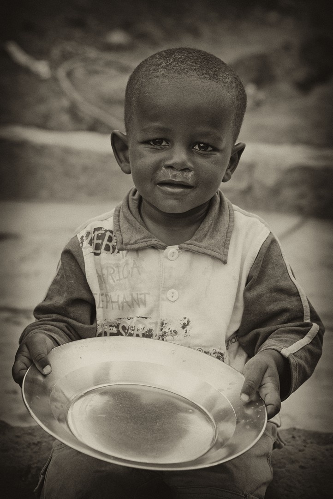
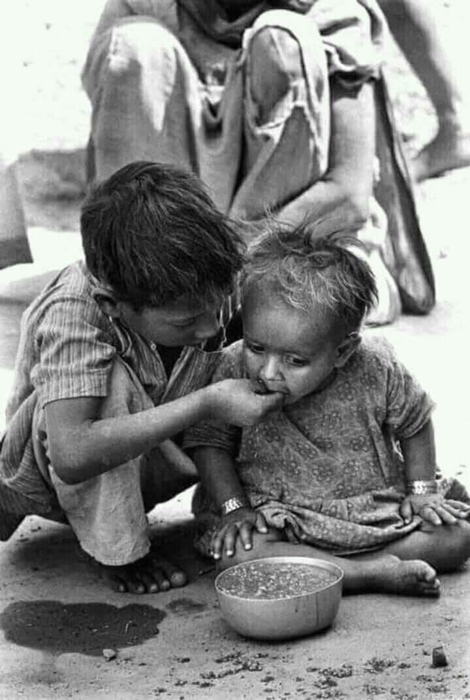
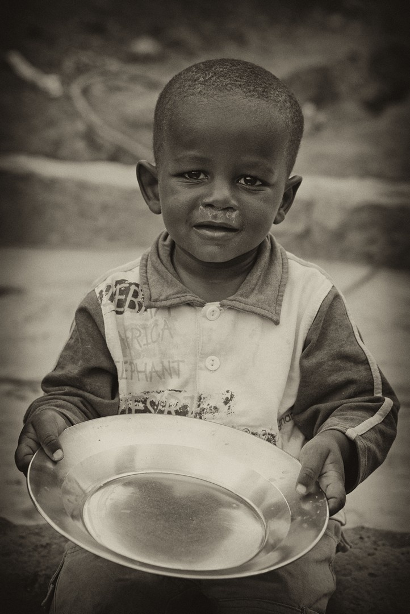
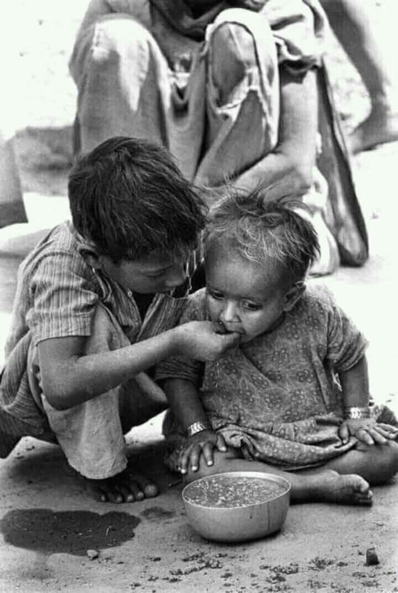
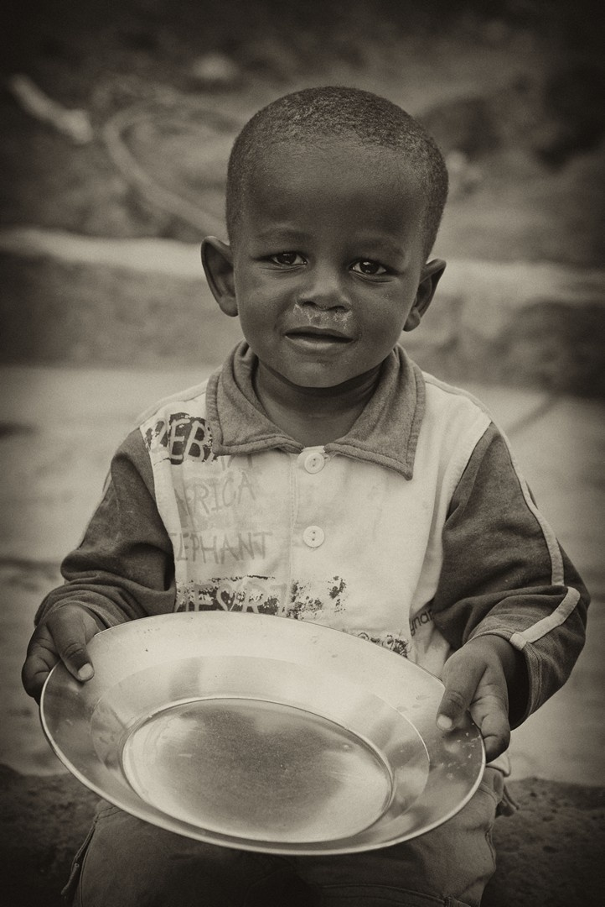
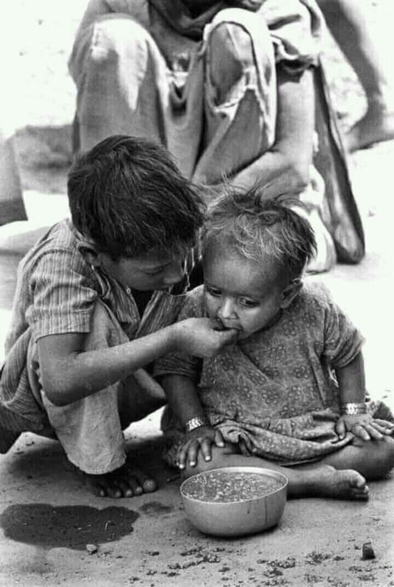

“Together, One Step at a Time”
Ending World Hunger through awareness, action, and compassion.
 



Ending World Hunger through awareness, action, and compassion.


I chose Zero hunger as my advocacy, because hunger is a visible and pressing issue in our surroundings, especially in our city.
Many families, particularly children, are often seen on the streets begging just to satisfy their empty stomachs.
Urban poor families in the Philippines face extreme difficulties in meeting their daily needs, frequently moving within cities to survive.
One of the most essential needs they struggle to secure is food. Adolescent nutrition plays a crucial role in this context,
as it not only supports the development of muscles and healthy body fat but also significantly influences long-term health
by helping to prevent non-communicable diseases such as diabetes and heart conditions.
This problem, however, is not limited to the Philippines. Globally, food insecurity remains a major challenge.
For example, in South Africa in 2022, it was reported that only 41% of households with children and adolescents were food secure.
Proper nutrition during childhood and adolescence is crucial, as inadequate access to food not only affects physical growth
but also mental health. Studies have shown that child hunger is a modifiable risk factor for depression and suicidal thoughts
during late adolescence and early adulthood.
| Statistic | Value |
|---|---|
| Global number of people undernourished (2023) | ~733 million people |
| People globally with moderate or severe food insecurity | ~2.33 billion people |
| Filipino families with involuntary hunger (Mar 2025) | 27.2% of families |
| Philippines population with moderate or severe food insecurity (2022-2024) | 32.9% |
| Food poverty rate in Philippines (July 2025) | 43% of families (~11.3 million) |
The St. Paul University Philippines-Community Development Center Foundation, Inc. (SPUPCDC) has conducted a supplementary
feeding program in Ayapao, Philippines, which provided nutrition to 704 indigenous children aged between 0 and 6 years old.
Another solution was proposed in 2020, a Nutrition Intervention Strategy in the municipalities of Plaridel and Pulilan in Bulacan.
This involved complementary feeding for children aged 6 months to 2 years over 120 days. It promoted weight gain and
enhanced mothers’ knowledge about nutrition.
Other approaches include policies regulating unhealthy food marketing, imposing taxes, requiring clear labeling,
and improving school nutrition environments.
The purpose of my page is to share my advocacy for ensuring that every child is well-fed and receives proper nutrition. I want to inspire others to believe that they, too, can make a positive impact—no matter how small the step—toward ending child hunger and promoting healthy growth.